@JohanMabille @QuantStack
@JohanMabille @QuantStack

 

Jupyter: Humans in the Read-Eval-Print-Loop

What is Jupyter?
A consistent set of tools (protocols, standards, libraries) meant to improve the workflow of engineers, scientists

The Jupyter ecosystem: main apps
The Jupyter ecosystem: core libraries (Python)
The Jupyter ecosystem: the Xeus stack (C++)
Clients and kernels communicate through 5 channels
{
"header" : {
"msg_id": "...",
"msg_type": "...",
...
},
"parent_header": {},
"metadata": {},
"content": {},
"buffers": [],
}
[
b'u-u-i-d', # zmq identy(ies)
b'<IDS|MSG>', # delimiter
b'baddad42', # HMAC signature
b'{header}', # serialized header dict
b'{parent_header}', # serialized parent header dict
b'{metadata}', # serialized metadata dict
b'{content}', # serialized content dict
b'\xf0\x9f\x90\xb1' # extra raw data buffer(s)
...
]